¿Qué es nuestra Marketplace?
Es un espacio en línea donde agricultores y empresas pueden vender sus productos directamente a consumidores y distribuidores sin intermediarios.
Beneficios
- Acceso a una red más amplia de compradores.
- Precios justos sin intermediarios.
- Venta directa y sin complicaciones.
- Facilidad de uso para agricultores y compradores.
 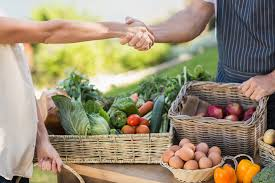
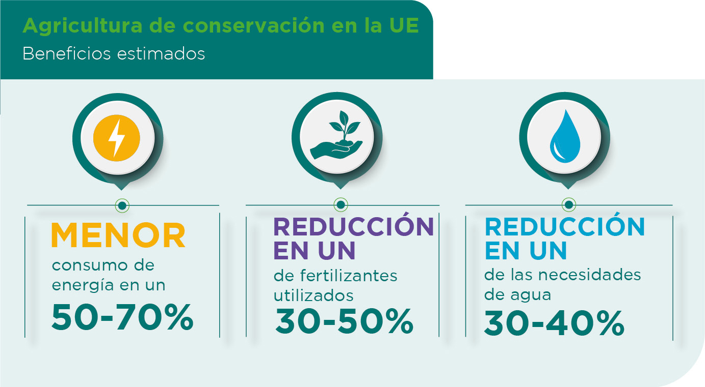
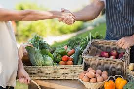
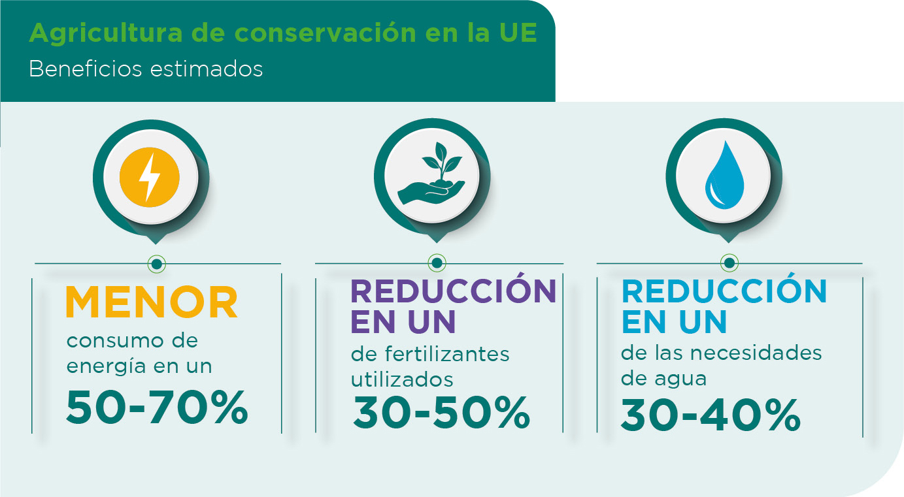
¿Qué productos se pueden vender?
Desde frutas y verduras frescas, como tambien productos para cultivos que promocionan las empresas.
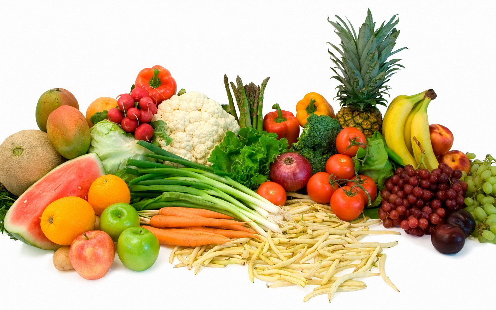
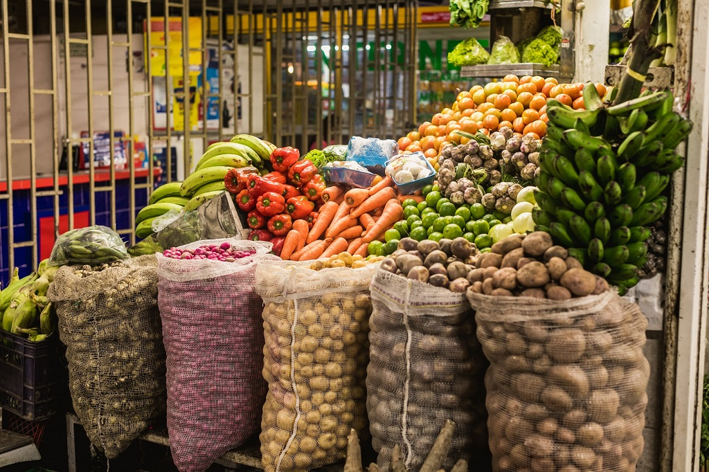
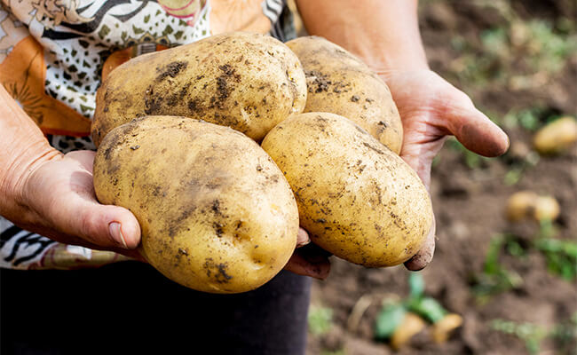
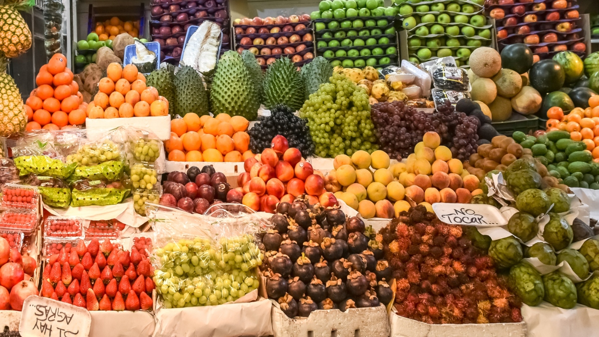
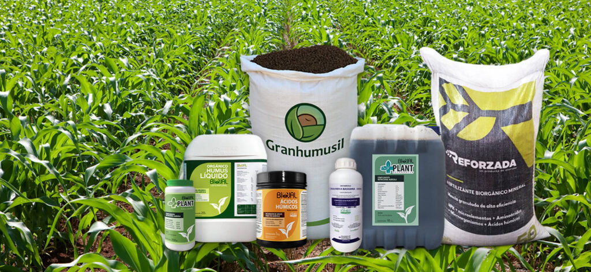
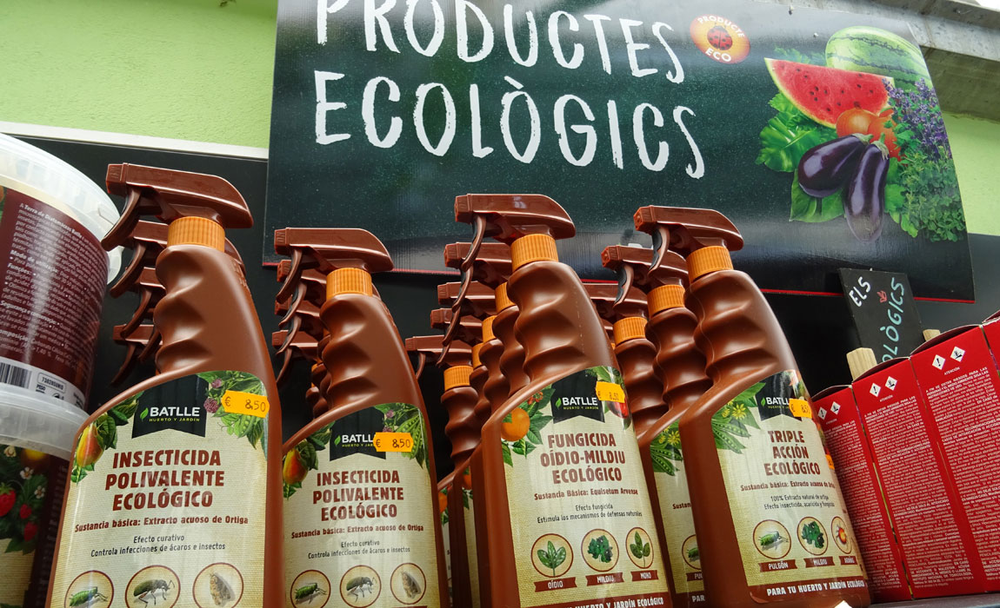
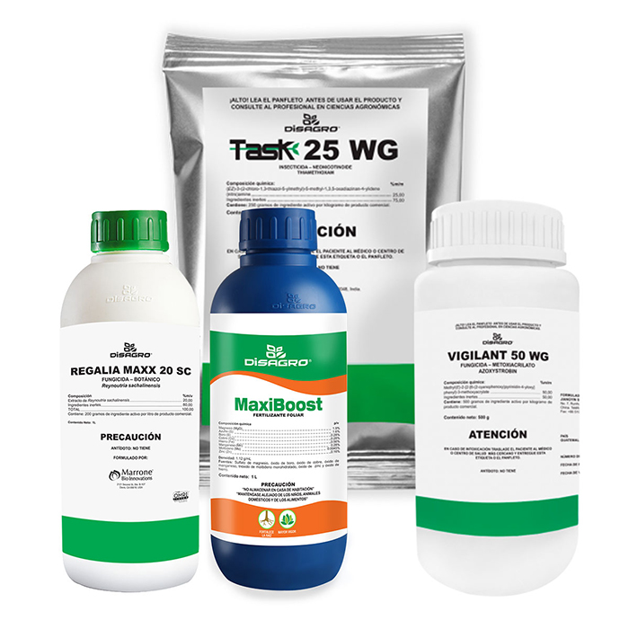
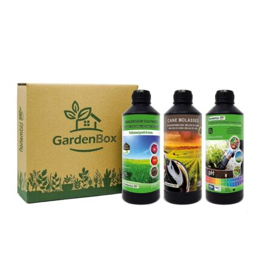
¿Imformacion del mercado ?
- precios de algunos productos del mercado
- informacion sobre agricultura
- productos mas vendidos
- Video Informativo
Empresas
Aquí encontrarás empresas que ofrecen insumos y productos agrícolas.
Agricultores
Próximamente se añadirá información sobre agricultores.
Contacto
Para más información, escríbenos a contacto@marketagro.com